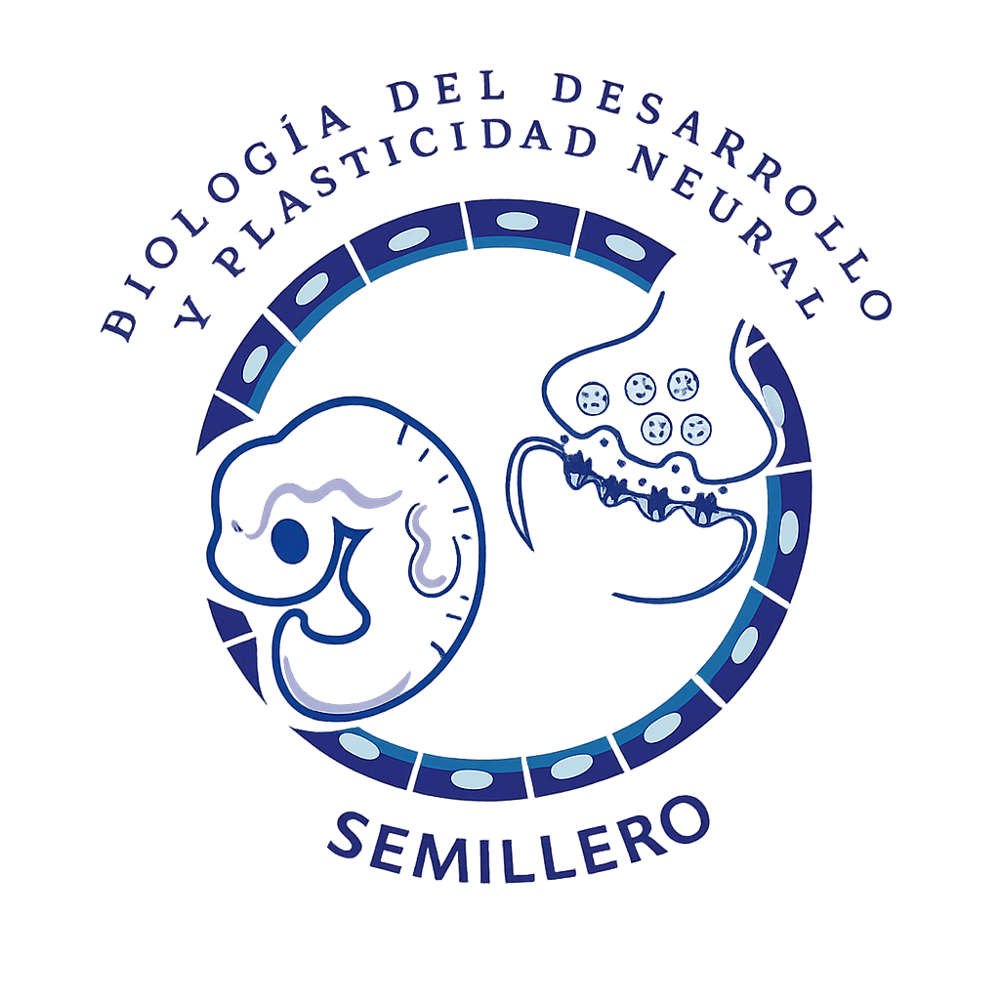

8° BiosisTalks
ethiological
signatures
neural
dormancy
circuitry
Apr 21, 2026

Aquí podrás revisar el calendario histórico de todas las charlas que se han abordado en el marco de Biosis Talks y junto con los Webinar NeuroLabs del Semillero de Biología del Desarrollo y Plasticidad Neural - Bioden